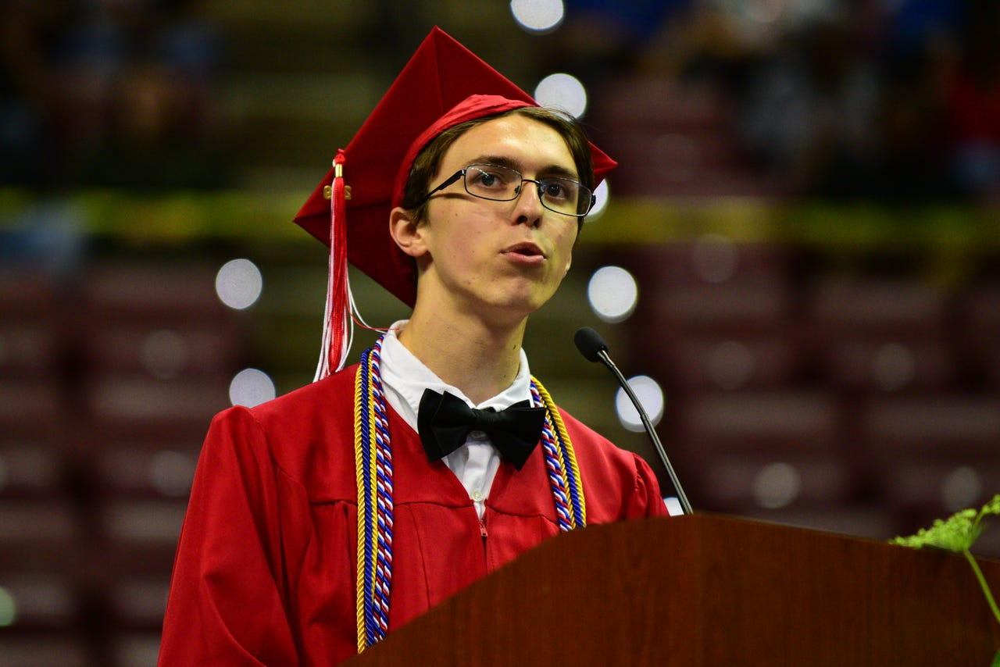

About Me


My name is Daniel Fletcher, and I have lived in Tallahassee, FL for my entire life! I graduated from Leon High School in 2019, from which I promptly attended Florida State University where I attained a degree in computer science. In December 2022, I graduated from FSU with a Bachelor of Science degree.